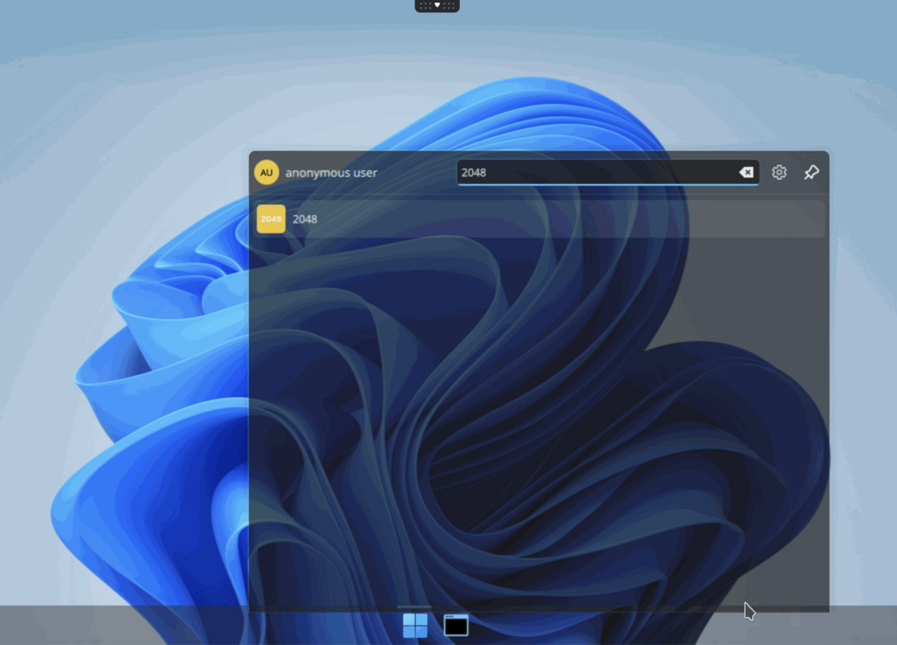
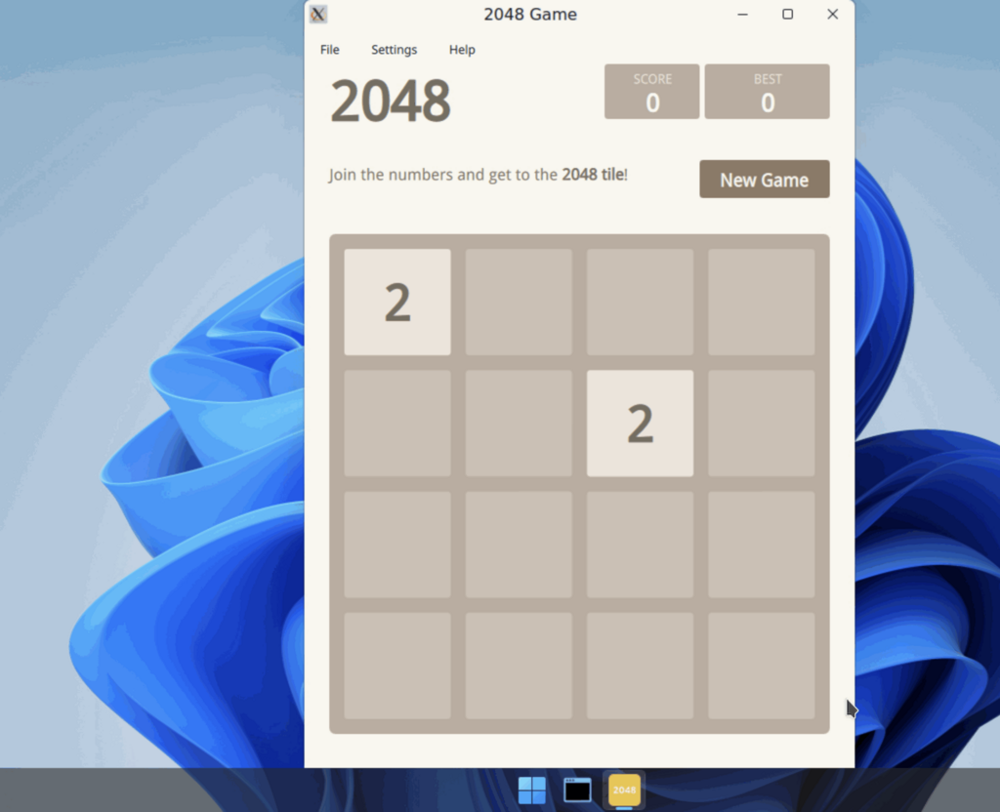

Build an application from template
Goal: Build your own application image from template container image.
abcdesktop uses container image format with some labels to describe an application.
Requirements
- your own public or private container registry.
nodejsinstalled on your host.dockercommand line to build container image.wgetcommand line installed.
Build your own application image
The new image is the game 2048.
Create a directory named build, and create a directory icons inside build
mkdir -p build/icons
cd build
To build your own image create first a json file.
Create a json file named applist.json, inside build directory, and add the content to the json file.
[
{
"cat": "games",
"debpackage": "2048-qt",
"icon": "2048_logo.svg",
"keyword": "2048",
"launch": "2048-qt.2048-qt",
"name": "2048",
"displayname": "2048",
"path": "/usr/games/2048-qt",
"template": "ghcr.io/abcdesktopio/oc.template.ubuntu.gtk.26.04"
}
]
To fill the data inside the json file :
| name | Type | Data |
|---|---|---|
cat |
string | games |
debpackage |
string | 2048-qt |
icon |
string | 2048_logo.svg |
keyword |
string | 2048 |
launch |
string | 2048-qt.2048-qt |
name |
string | 2048 |
path |
string | /usr/games/2048-qt |
template |
string | ghcr.io/abcdesktopio/oc.template.ubuntu.gtk.26.04 |
You can read the following help lines, or fill the json missing value by yourself.
catis the category, choose the most appropriate value in the list :[ 'office', 'games', 'graphics', 'development', 'utilities', 'education' ]debpackageis the name of the 2048 ubuntu package. To find the package name, look at the link 2048 Ubuntu Package.iconis the name of the icon. abcdesktop support onlysvgicon file format. To get the icon file, look at the link https://upload.wikimedia.org/wikipedia/commons/1/18/2048_logo.svgkeywordis a list of the keywords to find the application. Set the value to 2048.launchis the X11 Class name of the window. To get this value, we need to run the application on GNU/Linux (read the dedicated chapter below).nameis the name of the application. Set the value to 2048.pathis the binary path to run the application.templateis the name of the parent image. The default image parent isghcr.io/abcdesktopio/oc.template.ubuntu.gtk.26.04. You will find the template list in next chapter.
{kind=link}
Build your new image 2048
- Download the icon for your applications
wget https://upload.wikimedia.org/wikipedia/commons/1/18/2048_logo.svg -O icons/2048_logo.svg
- To build your new image, download the node js files
wget https://raw.githubusercontent.com/abcdesktopio/oc.apps/refs/heads/4.4/make.js
wget https://raw.githubusercontent.com/abcdesktopio/oc.apps/refs/heads/4.4/package.json
Run the command npm install command line, to install packages
npm i
- Run
make.jsbuild a new DockerFile for the 2048 application. Remember, all application images use container images.
nodejs make.js
You should get the output
Namespace(dockerfile=false, release='4.4', applicationfile='applist.json')
Read database json file=applist.json
opening file applist.json
applist.json entries: 1
Creating Dockerfile 2048.d
The new file 2048.d has been generated :
2048.dis the Dockerfile for your 2048 abcdesktop application
You can read the content of the Dockerfile 2048.d.
List all labels, and confirm that the icon file is uuencoded format. Uuencoding is a form of binary-to-text encoding.
Now it's time to build your 2048 app. Run the command docker build command.
Replace the value of the REGISTRY with your own if need
REGISTRY=abcdesktopio
docker build -f 2048.d -t $REGISTRY/2048.d .
You should read the output :
[+] Building 62.3s (8/8) FINISHED docker:default
=> [internal] load build definition from 2048.d 0.0s
=> => transferring dockerfile: 3.49kB 0.0s
=> [internal] load metadata for ghcr.io/abcdesktopio/oc.template.ubuntu.gtk.26.04:4.4 0.0s
=> [internal] load .dockerignore 0.0s
=> => transferring context: 2B 0.0s
=> CACHED [1/4] FROM ghcr.io/abcdesktopio/oc.template.ubuntu.gtk.26.04:4.4 0.0s
=> [2/4] RUN echo 'debconf debconf/frontend select Noninteractive' | debconf-set-selections 0.3s
=> [3/4] RUN DEBIAN_FRONTEND=noninteractive apt-get update && apt-get install -y --no-install-recommends 2048-qt && apt-get clean && rm -rf /var/lib/apt/lists/* 59.9s
=> [4/4] RUN if [ -x /usr/bin/dbus-launch ]; then chmod g+r,g+w,o+r,o+w /var/lib/dbus ; fi 0.2s
=> exporting to image 1.8s
=> => exporting layers 1.8s
=> => writing image sha256:7804b6c77950a0f43daa13b7b0901eb4b795f984c6d888ab6ef513573b4d3147 0.0s
=> => naming to docker.io/abcdesktop/2048.d
- Push your image to your registry
Replace the value of the REGISTRY with your own if need. If you don't have your own registry, you can skip this command but keep using
REGISTRY=abcdesktopio
REGISTRY=abcdesktopio
docker push $REGISTRY/2048.d
- Create a json file from your container image
If you don't have your own registry, do not skip this command, and keep using
REGISTRY=abcdesktopio
REGISTRY=abcdesktopio
docker inspect $REGISTRY/2048.d > 2048.json
Push your image to abcdesktop service
- Send the image to abcdesktop pyos instance
NAMESPACE=abcdesktop
PYOS_POD_NAME=$(kubectl get pods -l run=pyos-od -o jsonpath={.items..metadata.name} -n "$NAMESPACE" | awk '{print $1}')
kubectl cp 2048.json $PYOS_POD_NAME:/tmp -n $NAMESPACE
kubectl exec -i $PYOS_POD_NAME -n abcdesktop -- curl -X POST -H 'Content-Type: text/javascript' http://localhost:8000/API/manager/image -d @/tmp/2048.json
This command reads the PYOS_POD name, then copy the 2048.json file to /tmp of PYOS_POD, then send the /tmp/2048.json to REST API server.
The endpoint image returns a json documment
[
{
"cmd": [
"/composer/appli-docker-entrypoint.sh"
],
"path": "/usr/games/2048-qt",
"sha_id": "sha256:7804b6c77950a0f43daa13b7b0901eb4b795f984c6d888ab6ef513573b4d3147",
"id": "abcdesktop/2048.d:latest",
"architecture": "amd64",
"os": "linux",
"rules": {},
"acl": {
"permit": [
"all"
]
},
"launch": "2048-qt.2048-qt",
"wm_class": null,
"name": "2048",
"icon": "2048_logo.svg",
"icondata": "PD94bWwgdmVyc2lvbj0iMS4wIiBlbmNvZGluZz0iVVRGLTgiIHN0YW5kYWxvbmU9Im5vIj8+CjxzdmcgeG1sbnM9Imh0dHA6Ly93d3cudzMub3JnLzIwMDAvc3ZnIiB3aWR0aD0iMzAwIiBoZWlnaHQ9IjMwMCI+CiAgPHJlY3Qgd2lkdGg9IjMwMCIgaGVpZ2h0PSIzMDAiIGZpbGw9IiNlZGM1M2YiIHJ5PSI0Ni44MTIiLz4KICA8cGF0aCBmaWxsPSIjZmZmIiBmaWxsLW9wYWNpdHk9Ii45NDExOCIgZD0iTTkwLjQ5NCAxODAuMkg0Ni44Njl2LTkuOTI5NWM3LjgyMzgtNy44MjIzIDMwLjQ3NC0yNS40MDkgMjguMTUtMzUuNTMtMy4wNzIxLTkuNjg4OC0xNi41MTYtMy4xMDQxLTE4LjQ5NyAxLjMxNzlsLTkuNjA2LTcuMzRjOS45MDUxLTE1LjI3NyA0MC41NDgtMTMuNTE3IDQxLjQxOCA2LjE2MDguMTM0MTcgMTUuNTUzLTE1LjMyOCAyNS4wOS0yNC4zNDQgMzMuNjY4di41OTUzNmgyNi41MDR6bTU1LjE5Ni0zMC4wOGMuMDYzMSAxNy45MzQtNS4xMTQ2IDMxLjQ4NS0yMy4wMjcgMzEuNi0xOS4wODMtLjAzNTYtMjMuNTYtMTMuNzQzLTIzLjQ5NS0zMS40ODgtLjA2NDktMTcuNzggNC43ODEzLTMxLjU4IDIzLjQ5NS0zMS42MTQgMTguMDY2LjAzMzUgMjIuOTY0IDEzLjg1NCAyMy4wMjcgMzEuNTAyem0tMzMuNzM0LjExMjM2Yy4xMTU1NSA3LjAyNjYuNjc1OTkgMjAuNjE0IDEwLjQ4MyAyMC43MTEgOS43MDUzLjExMTY0IDEwLjUxMy0xNC4zODYgMTAuNTM4LTIwLjgyMy0uMTI2ODMtNi45OTEtLjQ4Nzc5LTIwLjUwMi0xMC40MjYtMjAuNTctMTAuMDk4LS4xODQxMi0xMC41MjggMTMuOTYzLTEwLjU5NSAyMC42ODJ6TTIzMS43MSAxMTguNjFjOC41MjQ1LjA0NTMgMjAuNDUgMy43MjU1IDIwLjQ1OSAxNC44MDMtLjAwOSA4Ljc1OC0zLjY0OTggMTAuNzI5LTEwLjY0IDE0LjU0OCA3LjY5NSA0LjY0NTMgMTIuNTM0IDguMTExMiAxMi42MjMgMTcuMjQxLS4wODkyIDExLjk1Ni0xMS42NTIgMTYuMjcxLTIyLjQ0MyAxNi4zNTEtMTEuMzYzLS4wNzk5LTIyLjU3LTQuMTM0Ni0yMi43NDQtMTYuNTIzLjE3ODk0LTguOTM3NiA1LjQxOTYtMTQuMDAxIDExLjEwMy0xNi44NjEtNi40OTA5LTMuOTgwNi05LjUzMzMtNi4wMzY0LTkuMzczMS0xNC44NC0uMTYwMi0xMC45MDcgMTEuODE3LTE0LjY3MyAyMS4wMTQtMTQuNzE5em0tMTAuNTM0IDQ1LjM0N2MtLjA0MzIgNS42ODM5IDQuNjk2MyA3Ljc0MzYgMTAuNDEgNy42OTU0IDUuNTA0OS4wNDgyIDkuNjcxOS0yLjI0NTMgOS43Mzk5LTcuMTY3NC4wNDc5LTguMjY2Ny05LjczNDQtMTEuODc5LTkuNzM0NC0xMS44NzlzLTEwLjQ1OSAzLjYxMjYtMTAuNDE2IDExLjM1MXptMTAuNDQxLTM0Ljk4MmMtNC43OTc5LS4wNDA5LTkuMTUxMiAxLjAzOTgtOS4xNzM5IDUuNjc3LjAyMjcgNS4zOTk1IDkuMDc3NCA5LjEwNCA5LjA3NzQgOS4xMDRzOC4zMzExLTMuNjU0NCA4LjQ1OTQtOS40ODQ3Yy0uMTkxOC00LjI1MjYtMy44MDg2LTUuMzM3Mi04LjM2MjktNS4yOTYzek0yMDIuMjIgMTcwLjA3aC03Ljc3djEwLjA4OGgtMTEuNTF2LTEwLjA4aC0zMC4wNnYtMTEuMTM3bDI5LjMzMi0zOC44NTNoMTIuMjM4djM5Ljc3Nmg3Ljc3em0tMTkuMjgtMzMuNzIzLTE4LjAzOCAyMy41MTdoMTguMDM4eiIvPgo8L3N2Zz4K",
"keyword": "2048,2048",
"uniquerunkey": null,
"cat": "games",
"args": null,
"execmode": null,
"showinview": null,
"displayname": "2048",
"desktopfile": null,
"executeclassname": null,
"runtimeClassName": null,
"executablefilename": "2048-qt",
"usedefaultapplication": false,
"mimetype": [],
"fileextensions": [],
"legacyfileextensions": [],
"secrets_requirement": null,
"containerengine": "ephemeral_container",
"securitycontext": {},
"created": "2026-04-08T17:02:15.742581671+02:00"
}
]
Run your new application 2048
Return to your abcdesktop website http://localhost:30443 and log in as Anonymous.
At the right corner, write in the search bar the keyword 2048

Click on the 2048 icon, and start your first abcdesktop application :

Now you can spent a lot of time to reach the 2048 score. Have fun !
Other templates
As a application is running inside a container, you can run application from multiple distribution at the same time. The template repository is https://github.com/abcdesktopio/oc.template
templates for almalinux
- oc.template.almalinux.8
- oc.template.almalinux.9
- oc.template.almalinux.10
- oc.template.almalinux.gtk.8
- oc.template.almalinux.gtk.10
- oc.template.almalinux.gtk.9
- oc.template.almalinux.minimal.9
- oc.template.almalinux.minimal.10
templates for alpine
- oc.template.alpine.edge
- oc.template.alpine
- oc.template.alpine.wine
- oc.template.alpine.edge.gtk
- oc.template.alpine.edge.gtk.libreoffice
- oc.template.alpine.libreoffice
- oc.template.alpine.3.23
- oc.template.alpine.minimal.3.20
- oc.template.alpine.minimal.3.21
- oc.template.alpine.minimal.3.22
- oc.template.alpine.minimal.3.23
- oc.template.alpine.minimal.edge
- oc.template.alpine.minimal
templates for debian
- oc.template.debian.gtk
- oc.template.debian
- oc.template.debian.minimal
templates for ubuntu
- oc.template.ubuntu.minimal.20.04
- oc.template.ubuntu.minimal.22.04
- oc.template.ubuntu.minimal.24.04
- oc.template.ubuntu.minimal.26.04
- oc.template.ubuntu.gtk.18.04
- oc.template.ubuntu.18.04
- oc.template.ubuntu.minimal.18.04
- oc.template.ubuntu.24.04
- oc.template.ubuntu.20.04
- oc.template.ubuntu.22.04
- oc.template.ubuntu.26.04
- oc.template.ubuntu.wine.mswindow
- oc.template.ubuntu.libreoffice
- oc.template.ubuntu.wine
- oc.template.ubuntu.gtk.java
- oc.template.ubuntu.gtk.24.04
- oc.template.ubuntu.gtk.22.04
- oc.template.ubuntu.gtk.20.04
- oc.template.ubuntu.gtk.26.04
templates for rockylinux
- oc.template.rockylinux.gtk.libreoffice.9
- oc.template.rockylinux.gtk.9
- oc.template.rockylinux.gtk.8
- oc.template.rockylinux.8
- oc.template.rockylinux.9
- oc.template.rockylinux.minimal.8
- oc.template.rockylinux.minimal.9
template with nvidia lib support
- oc.template.rockylinux.nvidia.8
- oc.template.rockylinux.nvidia.9
- oc.template.ubuntu.nvidia.24.04
- oc.template.ubuntu.nvidia.22.04
Great it's a good job, you have build your own abcdesktop 2048 application.